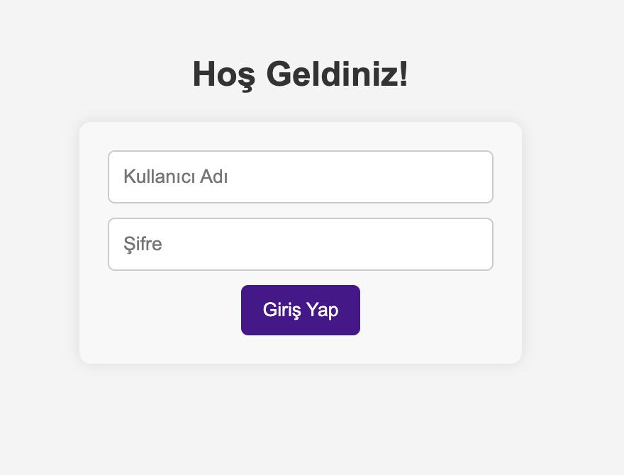
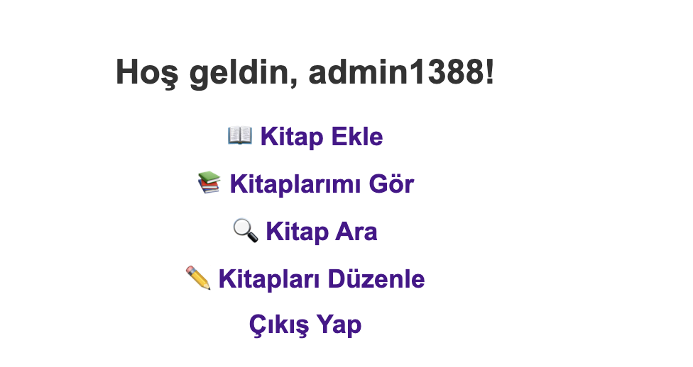
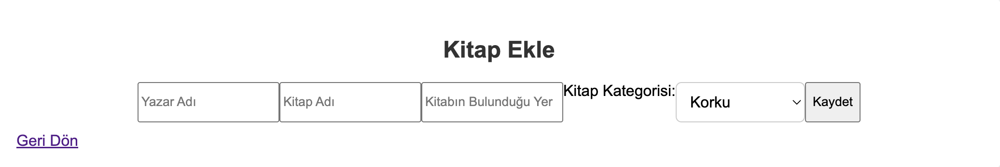
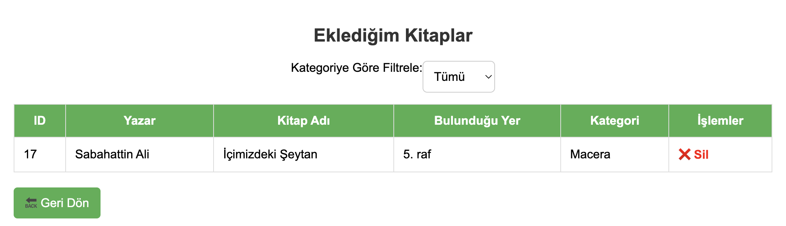
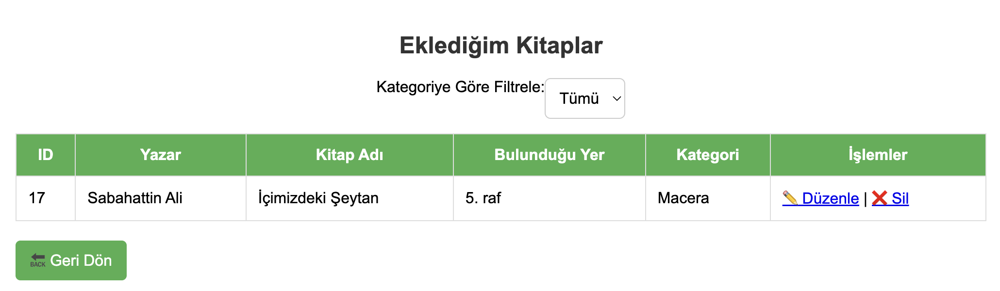

Book Tracking System

Project Overview
The Book Tracking System is a personal library management application designed to help organize and locate books in your personal collection. Unlike public library systems, this application is specifically tailored for individual use, allowing you to track the exact location of each book within your home library setup.
Key Features
-
Shelf Location Tracking
Record and track which shelf or location each book is stored in your personal library, making it easy to find books when needed.
-
Book Information Management
Add and edit detailed book information including title, author, genre, and personal notes.
-
Quick Search
Easily find books in your collection using various search criteria including location, title, or author.
-
Custom Categories
Create personalized categories and tags to organize books according to your preferences.
Application Screenshots

Login screen - User authentication interface

Main menu - Options for adding, viewing, searching, and managing books

Book addition screen - Shelf location and detailed information entry

Book list - Overview of added books with their shelf locations
Search interface - Custom category and tag management

Book details - Book information and shelf location view
Technical Details
Frontend
- Python Tkinter for GUI
- Custom widgets for location mapping
- Intuitive user interface
Backend
- SQLite database for local storage
- Custom search algorithms
- Location tracking system
Features
- Local data storage
- Fast search indexing
- Custom location mapping
Development Process
Requirements Analysis
Understanding personal library management needs and designing an efficient location tracking system.
Database Design
Creating an efficient database schema for storing book information and location data.
UI Development
Building an intuitive interface focused on easy book location and management.
Testing & Optimization
Ensuring accurate location tracking and quick search functionality.
Technical Implementation
Database Connection
The application uses SQLite for data storage, with a custom connection function that ensures proper database handling:
import os
import sqlite3
from flask import Flask
def get_db_connection():
db_path = os.path.abspath("database.db")
print("📌 Using database at:", db_path)
conn = sqlite3.connect(db_path)
conn.row_factory = sqlite3.Row
return conn
This function establishes a connection to the SQLite database and configures it to return rows as dictionary-like objects for easier data access.
User Authentication
Secure user authentication is implemented using password hashing and session management:
@app.route("/login", methods=["GET", "POST"])
def login():
if request.method == "POST":
username = request.form["username"]
password = request.form["password"]
conn = get_db_connection()
cursor = conn.cursor()
cursor.execute("SELECT * FROM users WHERE username = ?", (username,))
user = cursor.fetchone()
conn.close()
if user and check_password_hash(user["password"], password):
session["username"] = username
return redirect(url_for("dashboard"))
The login system uses Werkzeug's security features for password hashing and verification.
Book Management
The system includes comprehensive book management functionality with features like adding, updating, and categorizing books:
@app.route("/add_book", methods=["GET", "POST"])
def add_book():
if "username" not in session:
return redirect(url_for("login"))
if request.method == "POST":
author_name = request.form["author_name"]
book_name = request.form["book_name"]
location = request.form["location"]
category = request.form["kategori"]
conn = get_db_connection()
cursor = conn.cursor()
cursor.execute("SELECT id FROM users WHERE username = ?",
(session["username"],))
user = cursor.fetchone()
if user:
new_id = get_next_available_id()
cursor.execute("""INSERT INTO books
(id, author_name, book_name, location, kategori, user_id)
VALUES (?, ?, ?, ?, ?, ?)""",
(new_id, author_name, book_name, location,
category, user["id"]))
conn.commit()
This code demonstrates the book addition process, including user verification and database operations.
Search Functionality
Advanced search capabilities allow users to find books by various criteria:
@app.route("/search_books", methods=["GET", "POST"])
def search_books():
if request.method == "POST":
search_query = request.form["search_query"]
conn = get_db_connection()
cursor = conn.cursor()
cursor.execute("""
SELECT * FROM books
WHERE (CAST(id AS TEXT) LIKE ?
OR author_name LIKE ?
OR book_name LIKE ?
OR location LIKE ?)
AND user_id = (SELECT id FROM users WHERE username = ?)
""", (f"%{search_query}%", f"%{search_query}%",
f"%{search_query}%", f"%{search_query}%",
session["username"]))
The search function supports partial matching across multiple fields while ensuring users only see their own books.
Database Schema
The application uses a SQLite database with two main tables:
- users: Stores user information including hashed passwords
- books: Contains book details with foreign key relationship to users
Key features of the database design:
- Secure password storage using hashing
- Efficient indexing for quick searches
- User-specific data isolation
- Category-based organization